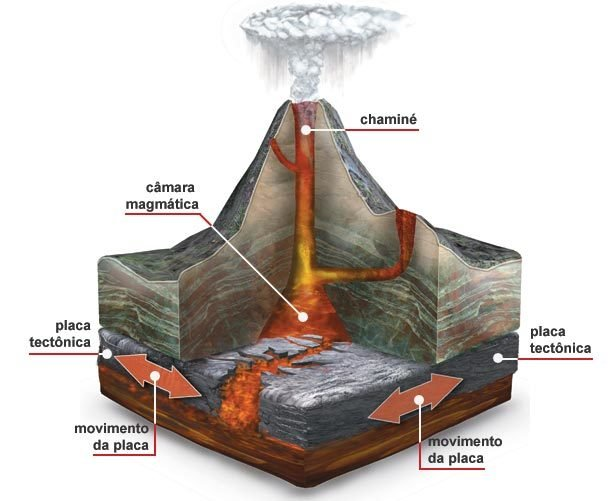

| L&O&A | Tipos e estruturas
Uma vez ativos, outra vez adormecidos...
Como é a estrutura de um vulcão?
 A estrutura de um vulcão é simplérrima, sendo basicamente resumida em:
1)Chaminé: Duto normalmente cilíndrico, normalmente no topo do monte. Onde o magma é expelido durante uma
erupção.
2)Câmara magmática: Local onde ocorre a acumulação do magma vindo do manto, é o por onde o magma flui até
chegar à chaminé durante uma erupção.
3)(Não é uma parte específica) Placas tectônicas: Fragmento da crosta que dá origem a um vulcão e dependendo
de sua atividade regula a atividade do vulcão.